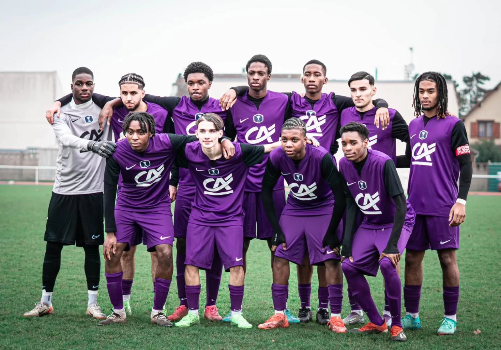

Notre projet
Clément Battistini, Président du Houilles Athletic Club
Un projet pour construire un club régional majeur
Une nouvelle étape pour le HAC
Depuis mai 2026, le Houilles Athletic Club a engagé une nouvelle étape de son développement. Avec plus de 1 200 licenciés et plus de 40 équipes, notre responsabilité est de donner au club une organisation, un projet sportif et des moyens à la hauteur de sa dimension.
Notre ambition est de faire du HAC une référence régionale, tout en restant profondément fidèle à son identité. Un club ancré à Houilles, accessible, formateur et tourné vers la jeunesse.
Le projet porté par Clément Battistini et l'ensemble du Conseil d'administration repose sur trois priorités : mieux structurer le club, renforcer encore la qualité de la formation et permettre à nos équipes d'évoluer durablement au meilleur niveau possible.
Cette ambition doit se construire progressivement, avec les éducateurs, les bénévoles, les licenciés, les familles, la Ville de Houilles et les partenaires qui accompagnent le club.

Trois priorités
Construire un club régional majeur
-
01
Structurer
Faire grandir le HAC en renforçant son organisation sportive, administrative et économique afin d'offrir à ses licenciés, éducateurs et bénévoles un cadre à la hauteur des ambitions du club.
-
02
Former
Placer la formation au cœur du projet, dès le Baby Foot U4, développer les compétences de nos éducateurs et installer durablement nos catégories de référence U14, U16 et U18 au niveau régional.
-
03
Ambitionner
Construire un club régional majeur, faire progresser notre équipe première et créer les conditions permettant au HAC de franchir de nouvelles étapes sportives sans perdre son identité locale et populaire.
Aller plus loin
Le projet en action
La formation
L'École de Football, labellisée FFF Excellence, accueille les enfants dès le Baby Foot U4.
Découvrir la formationLes équipes
Plus de 40 équipes, une équipe première en Régional 1 et des U14, U16 et U18 au niveau régional.
Voir les équipesLa gouvernance
Le Bureau et le Conseil d'administration qui portent ce projet collectif au quotidien.
Découvrir la gouvernanceLes partenaires
Les entreprises et institutions qui accompagnent le développement du club.
Devenir partenaire